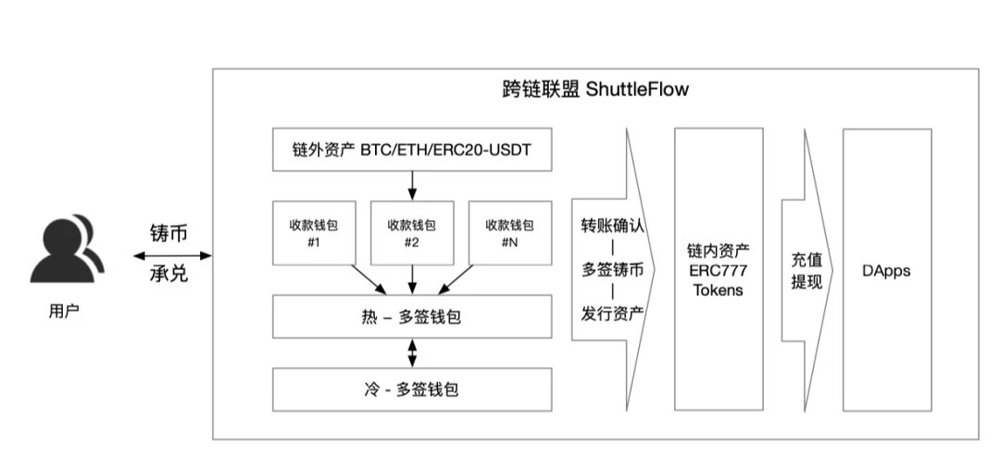

Conflux Shuttleflow Documentation
Shuttleflow is Conflux cross chain solution to integrate user assets from bitcoin and ethereum. Currently it is used to help user migrate assets from other blockchain to conlux and trade in Conflux Dex.
Terminologies
- cToken(Conflux Token): An ERC777 token on conflux backed 1:1 by tokens from other blockchain. e.g. 1 cBTC is backed by 1 bitcoin.
- User: The people who want to transfer assets from other blockchain to Conflux using shuttleflow.
- Custodian Alliance: A group of factory or institutions who have the authorities to mint and burn cToken.
- Payment Wallet: For a conflux address
X, there is a corresponding smart contractPon ethereum which is the payment wallet forX. If someone transferredAETH toC, the custodian alliance will mintAcETH forX. On bitcoin, the payment wallet is a special multi-sig wallet. - Custodian Hot Wallet: The multisig wallets of custodian alliance, which hold the users assets from other blockchain (the assets transferred to payment wallets).
- Custodian Cold Wallet: The multisig wallets of custodian alliance which is not connected to internet.
- Custodian Node: Custodian service run independently by each custodian member, which monitor the blockchain data and process user's mint/burn operations automatically.
Architecture

The workflow for a end user who want to use shuttleflow, they just need 3 steps: 1. Get the payment wallet address. 2. Transfer assets(BTC/ETH/USDT) to payment wallet. 3. Check balance in Conflux DEX after custodian alliance processed and trade in Conflux DEX.
The detail operations between step 2 and 3 is demonstrated in the right part of the architecture: 1. Custodian alliance monitor the transactions/contract events on bitcoin/ethereum, discover the user payment and wait for it confirming. 2. For a confirmed user payment, the custodian alliance will retrieve the assets in user's payment wallet to custodian hot wallet, and mint corresponding cToken for user. This is made by custodian nodes run by custodian alliance automatically. 3. At this point, the minted cToken will be then automatically locked in the Conflux DEX and user can do trade.
This rest document is organized as in the following sections: * Shuttleflow Contracts * Custodian Node * JSON RPC * Conflux Cross Chain SDK